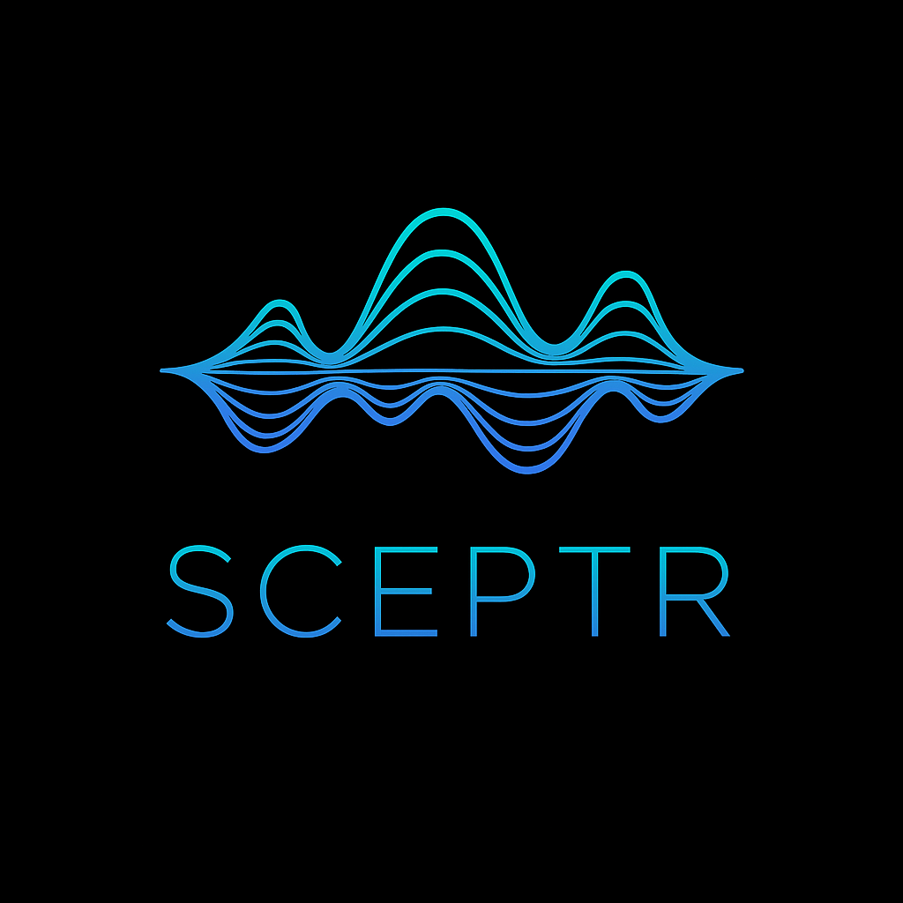

What is your transcriptome doing, and where is it investing its resources?
Tumour biopsies. Clinical parasite isolates. Drug-resistant pathogens. Environmental metatranscriptomes.
One sample, no replicates, no control required. SCEPTR tells you what your organism is spending its transcriptional budget on.
Not just which pathways are enriched, but how your cell allocates its entire transcriptional budget.
Continuous enrichment profiles show each functional category's fold enrichment across the full expression gradient. A programme dominating the top 50 genes looks fundamentally different from one distributed across hundreds of moderately expressed genes. SCEPTR classifies these patterns automatically as apex-concentrated, distributed, or flat, and tests each against a permutation null.
The Functional Allocation Profile shows what proportion of the expression apex each programme commands. Fold enrichment tells you which categories are disproportionately represented; budget share tells you where transcriptional resources are actually being spent. A small category can be highly enriched yet command a tiny share of the budget. Both perspectives matter; SCEPTR provides both.
Every enrichment profile is tested against a permutation-based null (1,000 shuffles of gene-category assignments, same smoothing applied to both). The report shows 95% null envelopes so you can see exactly where each category departs from random expectation. No arbitrary thresholds, no guesswork.
Each category in the report lists the specific genes contributing to the enrichment, ranked by expression. Expandable gene tables connect every enrichment signal back to the concrete transcripts driving it, so you can follow a striking pattern all the way down to individual genes.
Compare enrichment profiles between two conditions (mock vs infected, treated vs control) using gene-label permutation testing. SCEPTR detects not just magnitude changes but shape transitions: a programme reorganised from distributed expression into apex concentration upon infection represents a qualitatively different kind of response than a simple increase in mean expression.
Because each tier is compared to the sample's own background, SCEPTR works from one sample with no replicates, no control, and no comparative data. Clinical isolates, irreplaceable field samples, pilot experiments, the first transcriptome of a non-model organism. If you have expression data, SCEPTR tells you what your transcriptome is investing in.
Built for researchers who need to understand what a transcriptome is doing, especially when standard approaches fall short.
Organism-specific functional categories validated against Gene Ontology, Swiss-Prot, and GO slim sets.
general
human_host
vertebrate_host
cancer
bacteria
bacteria_gram_negative
bacteria_gram_positive
parasite_protozoan
helminth_nematode
helminth_platyhelminth
fungi
plant
protist_dinoflagellate
insect
All keywords validated through multi-layer provenance audit: 70.3% backed by Gene Ontology or Swiss-Prot controlled vocabularies. Bring your own categories with --category_set custom.
Use the statistical method on its own, or let the framework handle everything from raw reads.
Bring any annotated expression table. Skip all preprocessing and go straight to enrichment profiling.
Raw reads to interactive report in a single command. Nextflow + Docker for reproducibility.
McCabe, J.S. and Janouškovec, J. (2026). SCEPTR: continuous enrichment profiling reveals functional architecture across the expression gradient.